Kawakita, Ishikawa: things to do, food and stays
Kawakita · Ishikawa
Kawakita
Highlighted on the Ishikawa map.
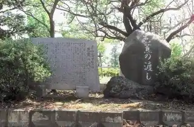
Stay
No bookable places to stay found in Kawakita — nearest options in Nomi.
Dining
椿ラーメンショップ
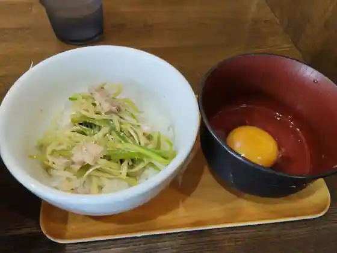
Tsubaki Ramen Shoppu
大口食堂
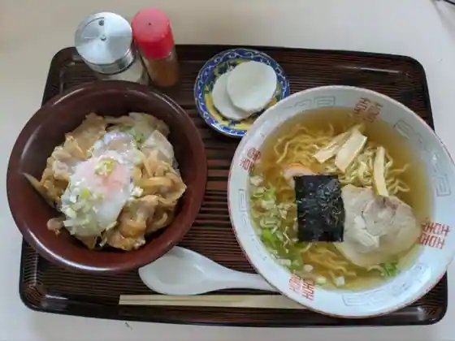
Oguchi Shokudo
大番食堂
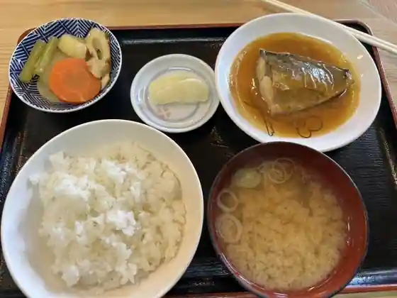
Oban Shokudo
プラント スリー 川北店
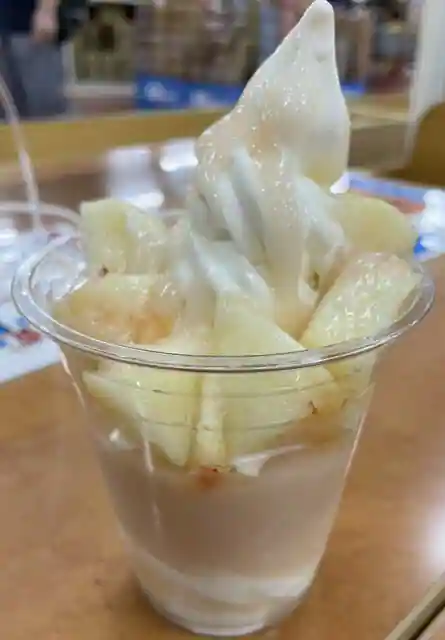
Puranto Suri Kawakita
エマーブル
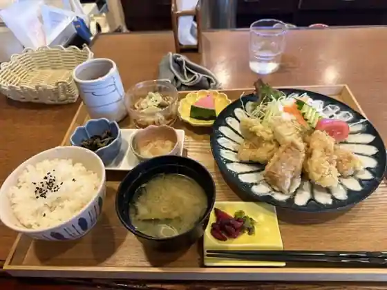
Emaburu
ジェイジェイバーガー&サンドイッチ 川北店
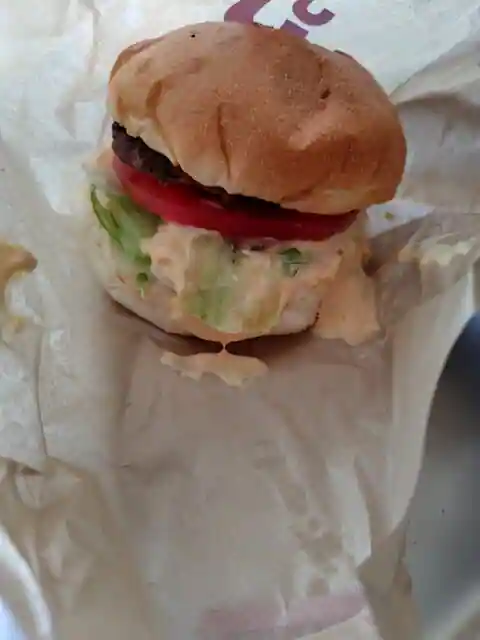
Jieijiei Burger & Sandoitchi Kawakita
喜水苑
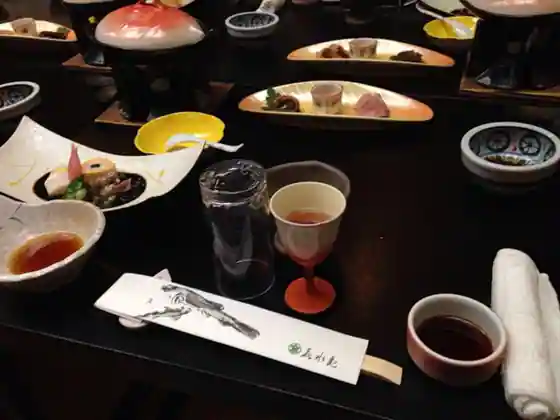
Ki Mizu En
オアシス
Oashisu
たこタロウ 川北店
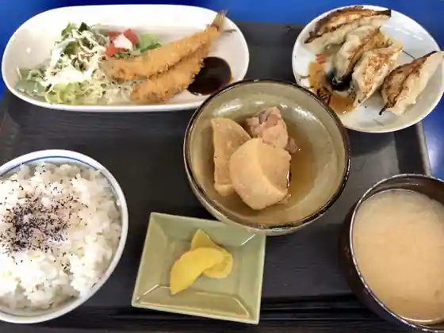
Tako Tarou Kawakita
ラ プルーズ
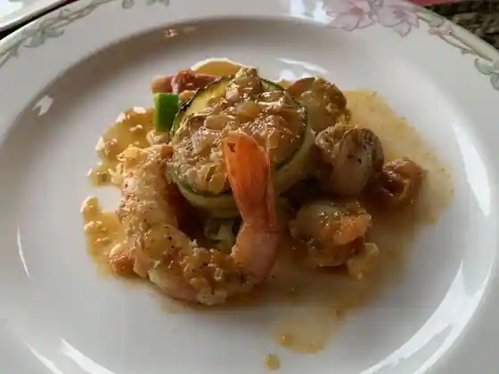
Ra Puruzu
スナック愛菜果
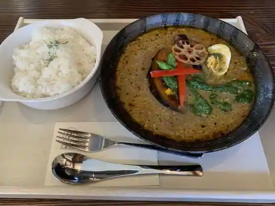
Sunakku Aina Ka
ダイニングバー アイサイカ
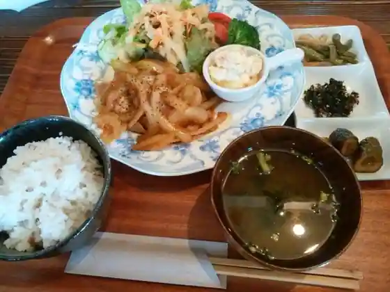
Dining Bar Aisaika
Sights
Basho no Watashi
Wakuwaku Tezu Kuri Farm Kawakita Sanchoku Bussan Kan
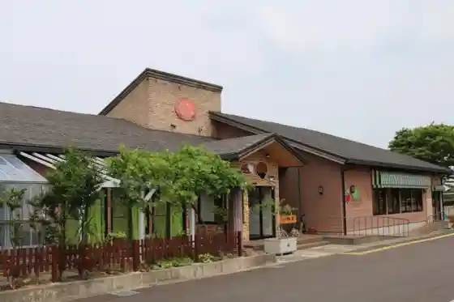
Fureai Kenko Center
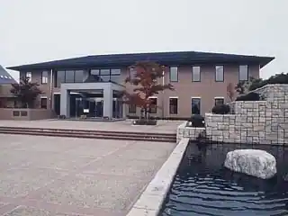
Kato Washi
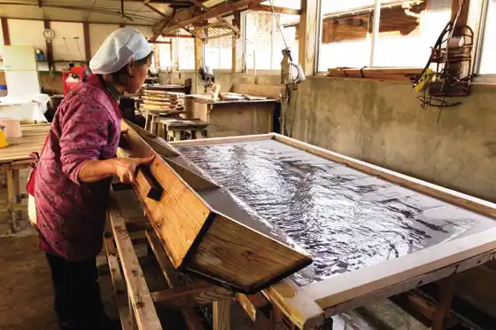
Kusa Shinjin Shiro Hi
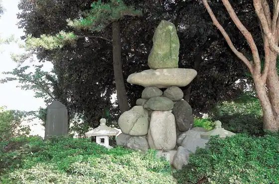
Sakura Zutsumi
Tomita Sukunabikona Shrine Ishihokora
Meijitenno O Yasumijo Park